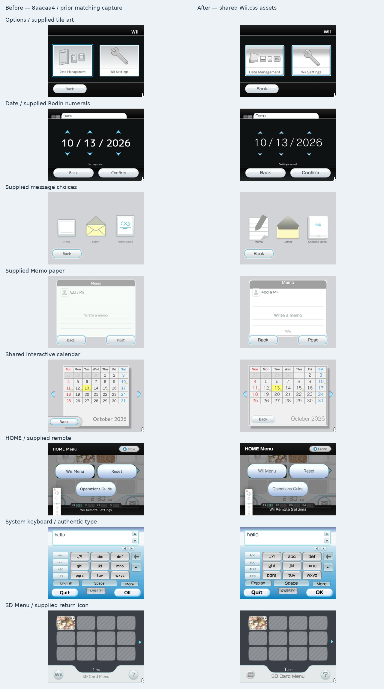

Before captures use the latest matching storage capture at 8aacaa4 or the preceding full menu collection. Fonts and surfaces are now shared with Wii.css. After captures come from the actual application at 640×480, 854×480, 960×720 and 1280×720.
Maintained layout reference · Implementation and limits · Capture evidence · Complete manual visual review: all 66 screens, findings and corrections · Additional screenshot references · Original audit
These are tested browser adapters using the user’s licensed Rodin fonts and supplied artwork. Native layout precision, retained reconstructions and raster source resolution remain separately labeled. Select Original Wii to see source confidence alongside each overlay.
This destination had no adapter in the audit.

Inspect every source file, every Illustrator artboard, runtime exports and all eight font specimens. Exact Wii.css matches are reused rather than copied into new drawings.
Actual platform-font, complete numeric-field and pressed-state checks · Interactive Calendar compared with the supplied dated references
Interaction/geometry checks · Manual SDP exchange and simulated SD full-menu flow · Font and additional-view measurements